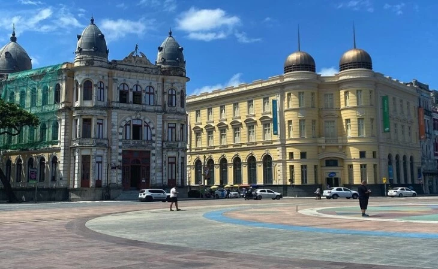
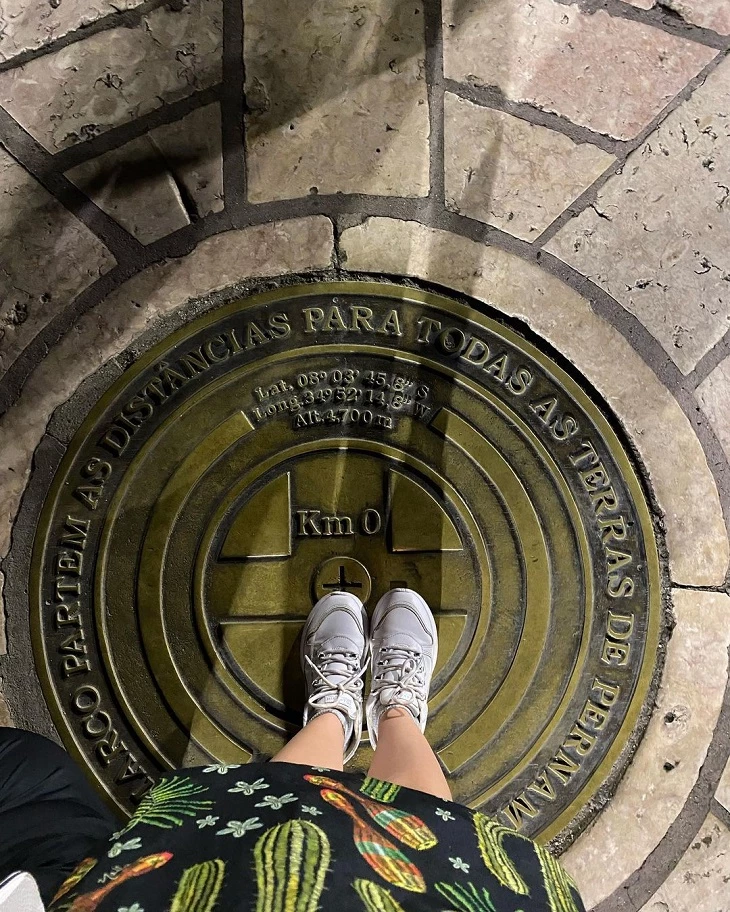

Marco Zero (Recife): um guia pela história e cultura de Pernambuco
O Marco Zero em Recife é um dos destinos históricos mais importantes do nordeste do país. A região reúne atrações históricas e culturais, centro de artesanato e ótimos restaurantes. Além disso, é o principal local do carnaval de Pernambuco, reunindo música, alegria e muita festa. A seguir, saiba mais detalhes sobre o destino.
História do Marco Zero (Recife)
O espaço surgiu junto à construção da cidade e também é responsável por preservar grande parte da história local. Pela região, é possível apreciar construções da época do Brasil Colonial, assim como estátuas, parques e monumentos históricos.
Na mesma praça também está situada a rosa-dos-ventos do Marco Zero. A atração foi anexada à praça na década de 1930, pelo artista pernambucano Cícero Dias. Uma curiosidade é que o marco reúne todas as distâncias oficiais de Pernambuco, dando origem ao termo ‘km 0’ do estado.

Como visitar o Marco Zero
Antes de conhecer as atrações que cercam o Marco Zero, aproveite também para ficar por dentro de dicas e informações essenciais sobre o local. Assim, é possível planejar melhor a viagem e aproveitar a atração com segurança:
- Quando ir: entre os meses de setembro e fevereiro, pois a época oferece um clima agradável e com menor
- Melhor horário para ir: escolha passear pela região durante a manhã. Neste período o número de visitantes é menor e
- Estacionamento: há boas opções de estacionamento nas proximidades do Marco Zero. Você pode estacionar na Praça do Arsenal ou no shopping Paço Alfândega.
- Estrutura: a região conta com um comércio forte, que reúne excelentes bares, restaurantes e cafeterias. Além disso, o local possui diferentes opções de hospedagens.
- Como visitar: há várias atrações no Marco Zero, então é importante reservar pelo menos 1 dia para aproveitar as atividades da região. O ideal é montar um roteiro para organizar todas elas.
E para curtir todas as suas atrações, acompanhe o próximo tópico, que traz ótimas dicas de passeios no local.

O que fazer no Marco Zero (Recife)
A região do Marco Zero em Recife é cheio de atrações culturais, monumentos históricos e ótimos restaurantes. Além disso, o local abriga um dos carnavais mais animados do nordeste.Também chamada de praça Barão do Rio Branco, o local é considerado um dos destinos mais visitados de Recife. A atração é cercada por construções e prédios históricos, como o antigo edifício London River Plate Bank e a Associação Comercial de Pernambuco. Lá também está situada a pintura da rosa-dos-ventos, que marca o km 0 zero de Recife.
